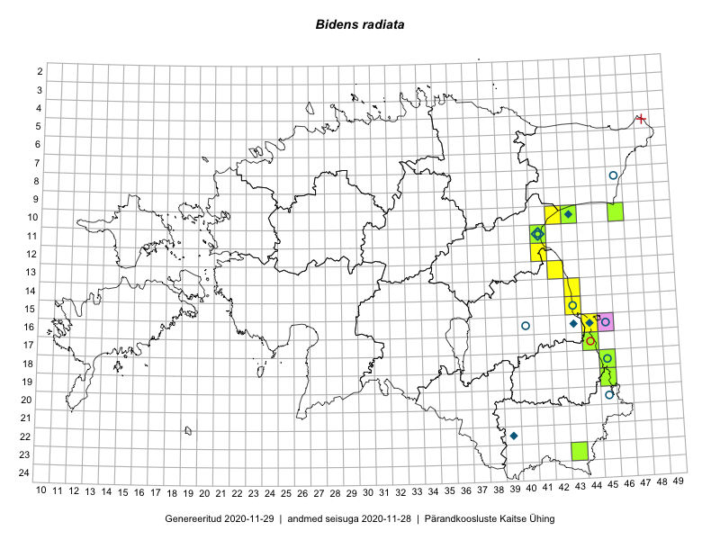

Bidens radiata
Uuendatud: 2016-12-01
Kaardile koondatud taksonid: Bidens radiata Thuill.

Kaart põhineb 15 kirjel, neist vaatlusi 14 ja eksemplare 1.
Viited andmebaasikirjetele
- Toomas Kukk, Kersti Tambets, Sten Mander, Janika Sammasto, Timo Luhamäe: 2014-07-29: 18-45: ala
- Toomas Kukk, Eerik Leibak: 2015-07-29: 16-44: ala
- Toomas Kukk, Eerik Leibak: 2015-07-29: 16-44: GPS punkt
- Peedu Saar: 2015-08-22: 11-41: GPS punkt
- Peedu Saar: 2015-08-22: 11-41: ala
- Toomas Kukk, Timo Luhamäe, Kersti Tambets, Sten Mander, Janika Sammasto: 2014-07-29: 19-45: ala
- Toomas Kukk, Kersti Tambets, Timo Luhamäe: 2014-07-30: 19-45: GPS punkt
- Toomas Kukk, Kersti Tambets, Timo Luhamäe: 2014-07-30: 19-45: GPS punkt
- Toomas Kukk, Kersti Tambets, Janika Sammasto, Timo Luhamäe, Sten Mander: 2014-07-29: 18-45: GPS punkt
- Toomas Kukk, Kersti Tambets, Janika Sammasto, Timo Luhamäe, Sten Mander: 2014-07-29: 18-45: GPS punkt
- Toomas Kukk, Kersti Tambets, Janika Sammasto, Timo Luhamäe, Sten Mander: 2014-07-29: 18-45: GPS punkt
- Thea Kull, Meeli Mesipuu: 2015-08-19: 19-45: ala
- Meeli Mesipuu, Thea Kull: 2015-08-19: 19-45: GPS punkt
- Peedu Saar: 2016-08-24: 17-44: GPS punkt
- Peedu Saar: 2015-08-22: 11-41: GPS punkt